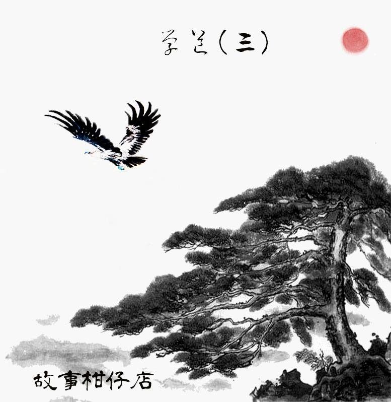

玄墨行者．學道（三）

那一筆水墨，混沌生風。天樞合掌，枯瘦手指織結成印，忽而伸出右掌朝前一刺，石牆竟如漩渦般從中勻出一個容一人通過的洞。天樞大步跨入洞，手一揮，石洞隨即關起，將拾兒三人擋在牆外。
擋在天樞眼前的，是一道從天而降的瀑布。稻殼鋪成了一張大毯，綿延在他與瀑布之間。
稻殼攏出大大小小的殼渦，錯落無致也有致，飄著淡淡清香。天樞端起一口氣，心無旁騖，腳尖深思熟慮前進，左旋，後退，再前進。踩過的渦發出光，連成一支閃閃發亮的勺子，同時間，嘩嘩激流的瀑布如簾幕般朝兩旁拉開，待天樞入幕，水門頃刻恢復原狀。
那是一個寬敞無比的空間，兩側各有一廂房，盡頭石壁面附著畫像，雖已斑駁剝落，圖樣仍依稀可見：一名白眉者與佝僂者舉棋對弈，旁邊有頭牛正趴伏歇息。
石壁前有一長方木桌，案上擺了幾本書，一座插著三柱清香的小銅鼎。
天樞燃香，拿起龍啣雙珠木手爐，盛接瀑水，舉至眉前，低低誦念。
如砂礫般無情的誦念聲軋然而止，天樞擺回手爐，取走案上書籍。
「那小兒又要受罰啦？」
幽幽的，如古鐘般的蒼老聲音從右側廂房傳出。
「沒的事。讓他學學尊師重道罷了。」天樞冷冷答道。
「何謂『道』？如何重之？學得來的，稱得上是『道』嗎？」那蒼老聲音嘶啞地笑了起來，笑聲迴盪在空闊石洞，聽來像野鷹的呼喚。
天樞不答，逕自將書揣進懷中，循原路出水門，過石門，回到外院。卻見大曲正檢視著藉車模型，拾兒歪倒蒲團呼呼大睡，虹月急著喚他。
「啪！」不等清醒，三本書就這麼摔在拾兒臉上，他驚醒彈起，困惑地翻著滿佈蟲蛀水漬的書嘀咕：「《《玄墨宗譜》……這是什麼？」
「看來忘得很徹底呢。」天樞冷笑，一口氣噴得鬍髭翻動，「明日午時，進內堂罰抄十遍。」
說完，便逕自走出石洞，大曲見狀立刻跟了上去，師徒倆一深一淺身影消失在圓柏森林中。
「這下好了，你真的惹火大師伯。」虹月理理額前髮絲，深怕暴露佈著胎記的左臉。
「叫我寫我就寫呀？他又不是我師父。」
「三師伯不知何時才回來，你還是聽話點好。」
拾兒看著書出了神，問：「妳讀過這本《玄墨宗譜》嗎？」
「有啊。」虹月手撐著線條腴潤的下巴，「我們很小的時候，不是學過嗎？好像是二師伯教我們念的，記載著玄墨一族的來歷呀。你忘了？」
「是嗎？」拾兒突然眼睛亮了，揀起書翻了翻，「我都忘了。但我還記得七年前十二月十六日，妳跌進湖裡，哈哈！」
「你少無聊了。」見到拾兒神色，虹月明白他起了好奇心，隨即又推他一把：「你趕緊抄去，看完了內容，記得告訴我，否則我也忘得差不多。」
「我這人從不獨佔好處的。」拾兒下意識把玩脖子上的藍玉髓，「既然我們都是玄墨傳人，當然得一起承擔！別說我欺負妳，我抄五遍，妳抄五遍。行不？」
－－－－－
#新連載依舊兩天一篇每晚準時六點半喔
#請人客多多指教
#記得去各大書店買我們的書故事柑仔店哩
